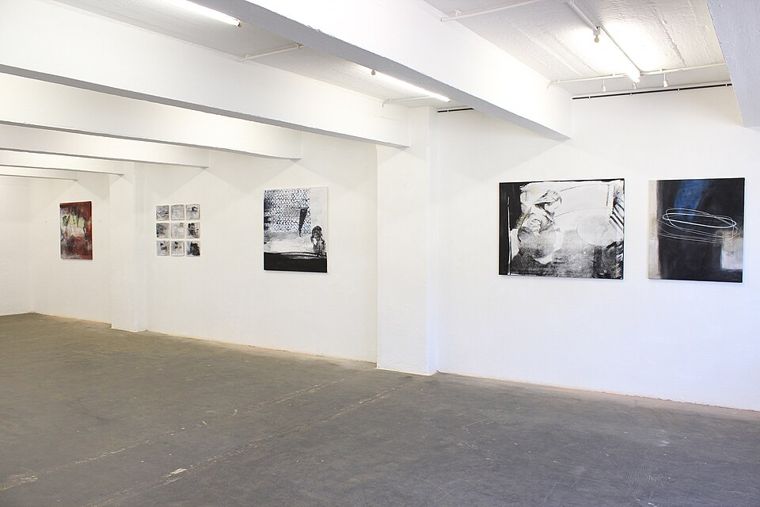
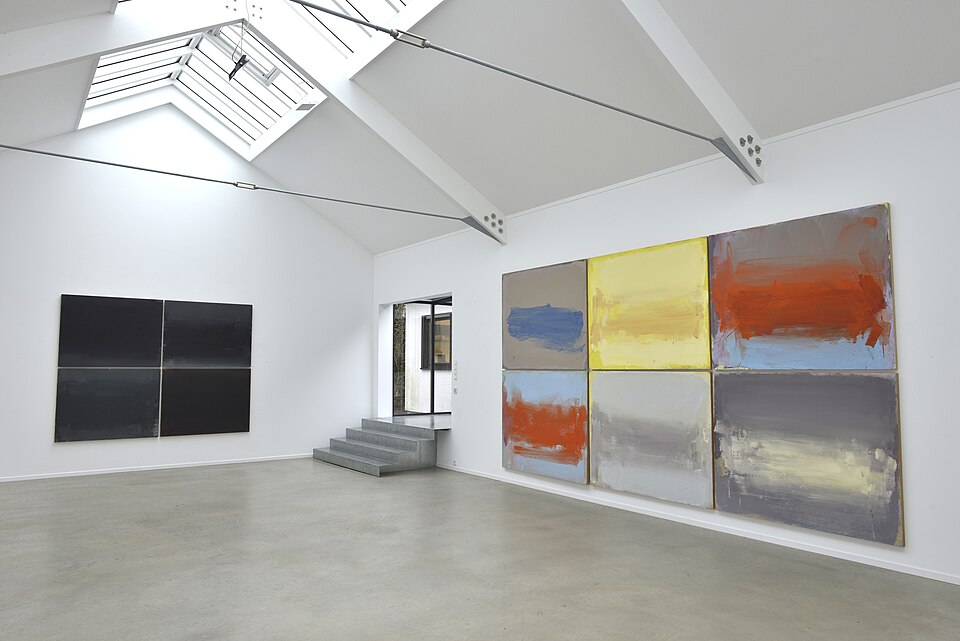
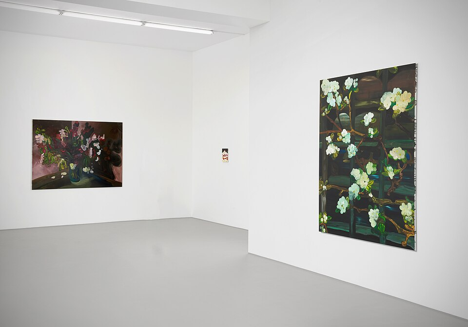
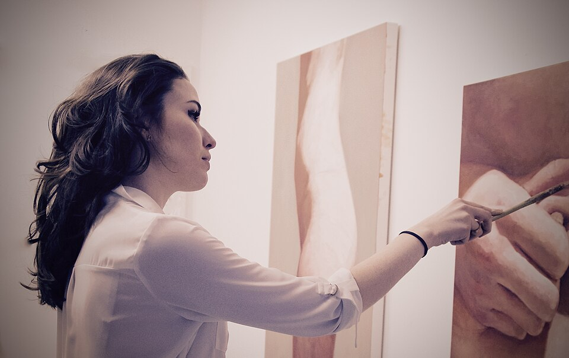
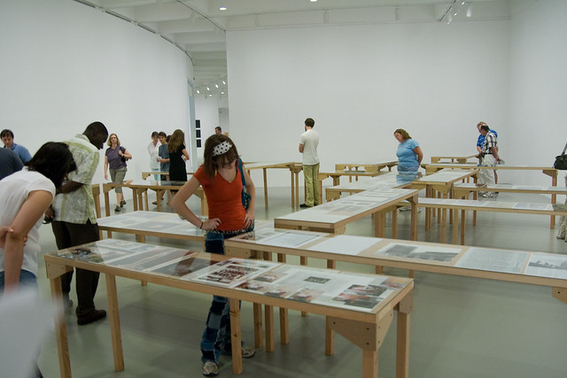
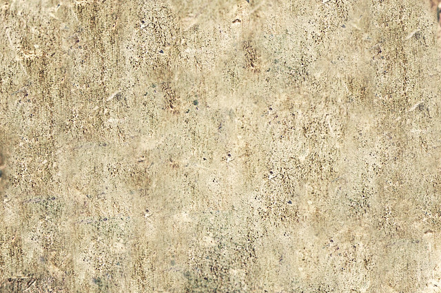
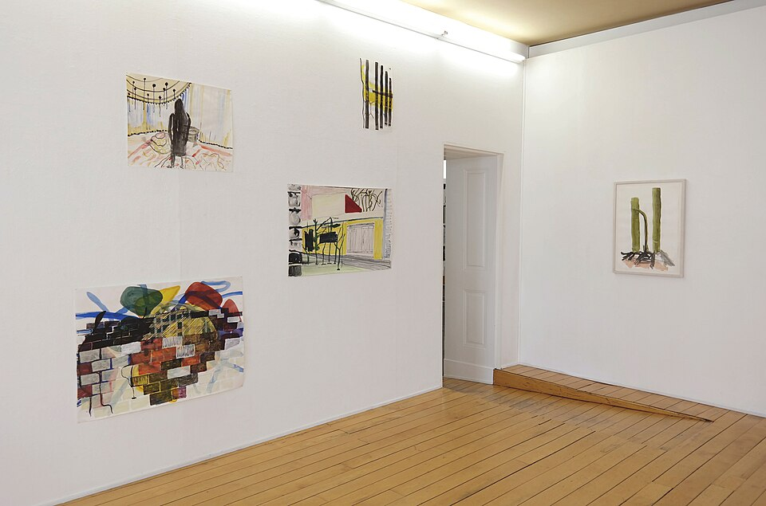

Jan Brož
Světlo na zdi
2026

Tiché ozvěny sledují stopy paměti v tlumených barvách a drobných gestech. Marta Kolářová maluje krajinu, kterou si pamatuje, ne tu, kterou vidí. Čtrnáct pláten vzniklo za poslední dva roky v jejím ateliéru na Šumavě.
Obrazy vznikají v mnoha vrstvách: autorka barvu nanáší, stírá a znovu překrývá, dokud z plochy nezůstane jen to podstatné. Výstavu doprovází komentovaná prohlídka s autorkou (termín doplníme).


Světlo na zdi
2026

Marta Kolářová
2025

kolektivní výstava
2025

Eva Šímová
2024
malba

objekt · koláž
fotografie
O nás
atmo gallery pracuje s výtvarníky, kteří už mají něco za sebou, ale nechtějí trávit čas propagací, sociálními sítěmi a jednáním s kupci. Na základě smlouvy za ně připravujeme výstavy, fotografie a texty a jednáme se sběrateli.
Jste autor a hledáte zastoupení? Ozvěte se a pošlete ukázky své práce.
Fotografie pocházejí z Wikimedia Commons a Flickru a nezobrazují tuto galerii ani uvedené autory. Byly zmenšeny a barevně upraveny.
Ausstellungsansicht Werner Schmidt.jpg – Streile-schmidt, CC BY-SA 4.0
Silent Spring, Clare Woods, Buchmann Galerie, 2023.jpg – Ulicaa, CC BY-SA 4.0
Ausstellungsansicht Hildesheim.jpg – Photo: Möndel; Artwork: Sibylle Möndel, CC BY-SA 3.0 de
White Cube Gallery C13 at Art Basel 2025 2.jpg – Kalai Ramu, CC BY-SA 4.0
Amy Hughes Artist Studio Portrait.jpg – Officiallyamy, CC BY-SA 4.0
Ausstellungsansicht STAMPA Basel, Zusammenbringen was nicht zusammengehört, Monika Dillier 1.jpg – Helga Broll, CC BY-SA 4.0
Scratchy Vintage Paint texture. – Mary Vican, CC BY 2.0
Gallery visitors – mrdannynavarro, CC BY-SA 2.0